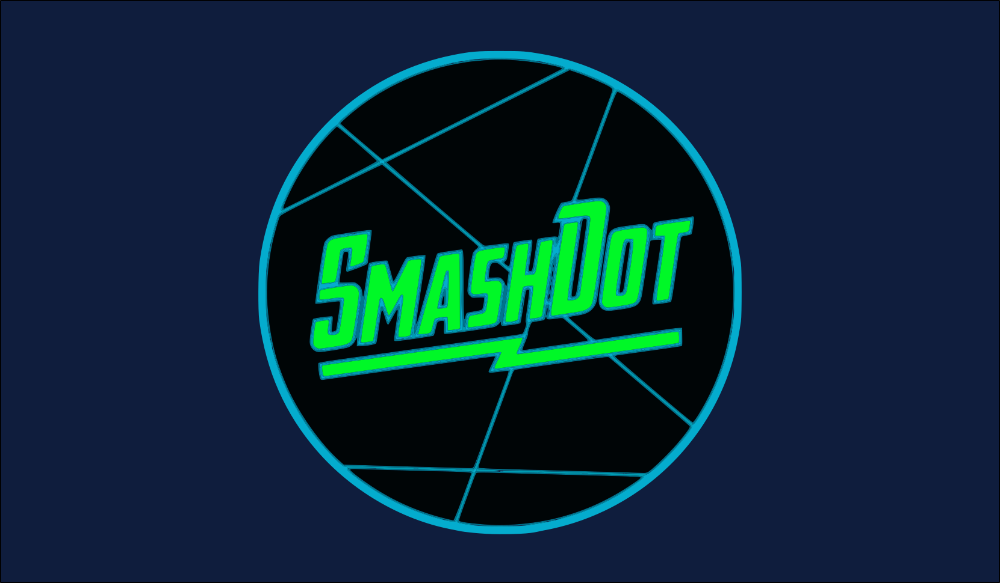

SmashDot

Project Description
SmashDot is an arcade style game built in Unity for both pc and mobile
The player's goal is to shoot the dot at a randomly placed falling dot. The score is incremented based on how many consecutive colissions the player makes. Unfortunately the computer I was using to develop the game died and I was only able to salvage old builds, not the actual project files.
Technical Sheet
These are the languages, topics, and frameworks explored in this project
- Unity
- C#
- Game Design
- Full pipeline development (Project taken to deployment on TestFligt beta testing)
Background Story
SmashDot was the first major project that I ever really dedicated myself to. I started the game in 10th grade and developed it for about 8-9 months that year. In that time I took it from a tiny prototype to a fleshed out game with highscores, menus, and level progression. The experience of developing this game taught me so much about Unity, game design, developing for mobile, battling Apple for developer certificates, inviting friends and family to beta testing, and countless other soft skills.
Let's Chat!
Contact me at kiran@gershenfeld.orgLink in at linkedin.com/KiranGershenfeld
Find Me at github.com/KiranGershenfeld